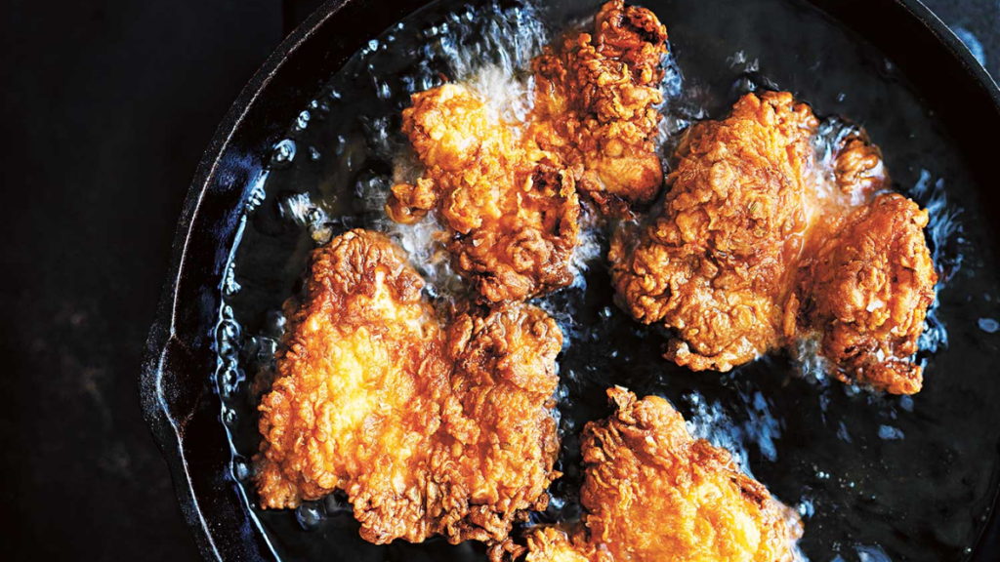

Fried Chicken

Description
Fear the frier? Fret no more, here's a simple recipe that will have you cranking out perfectly crispy pieces of fired chicken the very first time you try to tackle it. My kids call them giant chicken nuggets, wife says it's better than Popeye's, Dad says his is better...Can't win them all.
Ingredients
Buttermilk Marinade
6 thighs
6 drumsticks
3 cups milk (if substituting dairy-free use unsweetened)
3 tablespoons white vinegar
2 teaspoons salt
1 teaspoon pepper
Dredging Mixture
2 cups flour (glueten-free if thats your thing)
1 cup cornstarch
1 tablespoon onion powder
1 tablespoon garlic powder
1 tablespoon paprika
1 tablespoon dried thyme
1 tablespoon dried oregano
1 tablespoon dried basil
4 cups vegetable oil, peanut oil, or canola oil. Vegetable and Peanut are interchangeable, canola is for you weirdos who hate saturated fats.
Steps
In a large mixing bowl whisk together 3 cups milk, 3 tablespoons white vinegar, 2 teaspoons salt, 1 teaspoon pepper. Add in the chicken pieces, cover bowl with plastic wrap, throw in the fridge for at least two hours. Doing this step in the morning works great if the meal is for dinner.
In a gallon resealable bag add all of the ingredients for the dredging mixture except for the oil. Shake the bag until all the ingredients are evenly distributed.
Heat vegetable oil in a 10"-12" cast iron pan on medium heat. Heat until oil is 350°. Test oil by sprinkling a bit of flour in, flour should sizzle but not smoke. Or use a meat thermometer if you really want to be precise.
One at a time put the chicken in the bag and shake to coat, ensure the chicken is fully coated then place it aside on a baking sheet or piece of parchment paper.
4-5 pieces at a time add the chicken to the pan, do not overcrowd the pan and keep the chicken from touching other pieces. Turn each piece every two minutes with a pair of tongs, cook each piece for 15-18 minutes. Internal temperature should be 165°.
As they finish cooking remove the pieces and place them on a cooling rack. Let rest for approximately 10 minutes before serving.
Enjoy!